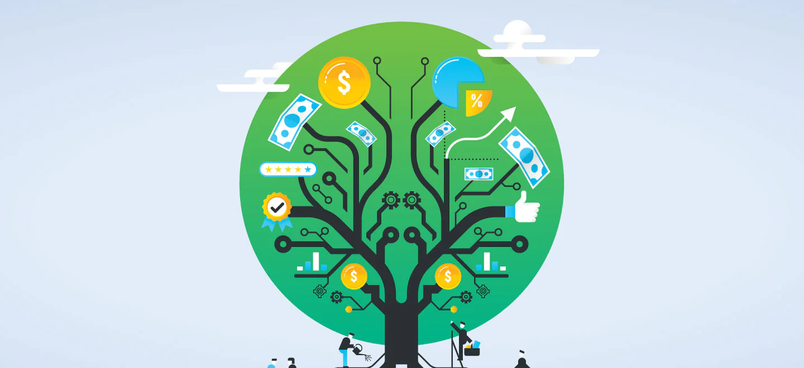
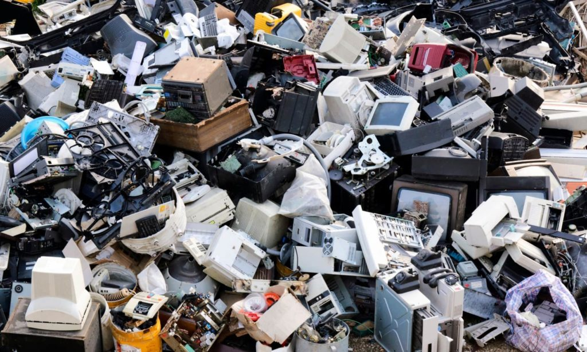
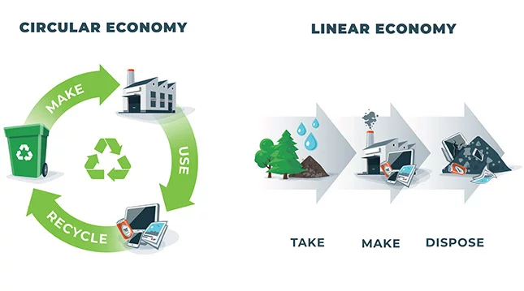
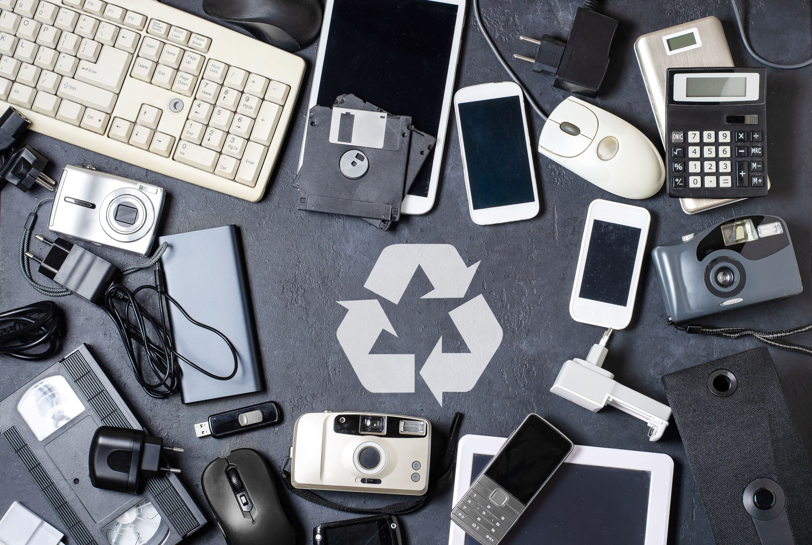
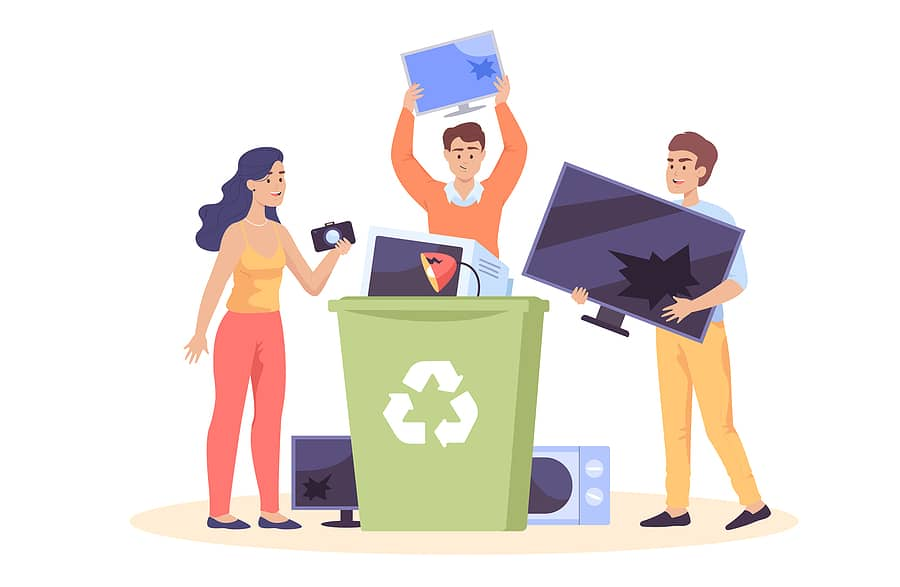
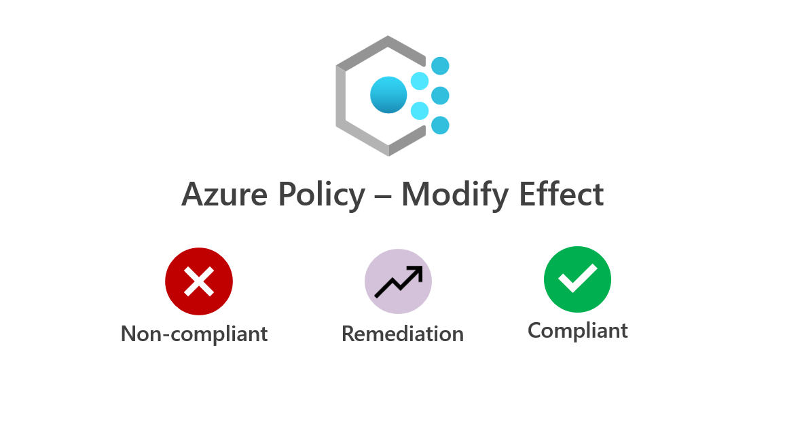
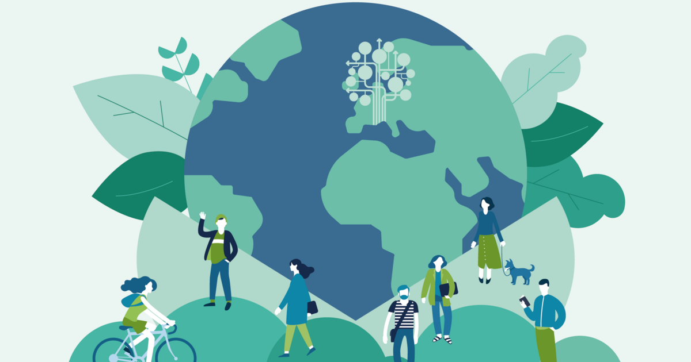

Welcome to Our Eco-Green World

We are dedicated towards ensuring that our planet has an environmentally friendly future ahead . Our goal is to spread the word about environmentally conscious conduct and the value of conserving the environment . Come along with us on this adventure in which we strive to create a greener, more ecologically sound planet for future generations to follow .
Environmental sustainability
We're delighted to have you here at EcoGreen , where we're committed to advancing ecological sustainability and protecting our surroundings for generations to come . An extensive approach called ecological sustainability aims to reconcile human activity with the surrounding environment . It entails making decisions and practicing behaviors that reduce our environmental impact and guarantee our planet's over time well-being and health .
Exploring the Impact of Digital End-Point Devices
In today's digital era, the world is increasingly interconnected through a vast network of devices known as digital end-points. From smartphones and tablets to laptops and smartwatches, these devices have become an integral part of our daily lives, revolutionizing the way we communicate, work, and interact with the world around us.
At Eco-Green , we are dedicated to exploring the profound impact of digital end-point devices on various aspects of our society, including education, business, healthcare, entertainment, and beyond. Through insightful analysis and thought-provoking articles , we aim to shed light on the ever-evolving landscape of digital technology and its implications for individuals and communities worldwide.
Why Focus on Digital End-Point Devices?
Digital end-point devices have transformed the way we access information, connect with others, and accomplish tasks. They have brought unprecedented convenience and efficiency to our lives, allowing us to communicate in real-time, access a world of knowledge at our fingertips, and manage our daily routines with ease. However, with this convenience also comes new challenges and considerations.
Understanding the Impact
Our website dives deep into the multifaceted impact of digital end-point devices on different aspects of society. We explore how they have reshaped the educational landscape, enabling personalized learning experiences, expanding access to knowledge, and transforming traditional teaching methods. Additionally, we analyze how businesses have leveraged these devices to streamline operations, enhance productivity, and connect with customers in innovative ways.
We also delve into the realm of healthcare, investigating how digital end-point devices have revolutionized patient care, remote monitoring, and the accessibility of medical information. Furthermore, we examine the impact on entertainment and leisure, from immersive gaming experiences to on-demand streaming platforms that have forever changed how we consume media.
Embracing the circular economy
A circular economy focuses on reducing waste , increasing efficiency of resources , and fostering closed-loop systems . We strive to create goods with longevity , versatility and recyclability in mind rather than the conventional linear "take-make-dispose" approach . Consumers can lessen the burden on earth's resources and cut down on harmful emissions by reusing , upcycling and practicing effective waste disposal .
Uncovering Opportunities and Challenges
While digital end-point devices have undoubtedly brought countless benefits, we recognize the importance of exploring the challenges that arise alongside these opportunities. We discuss topics such as digital privacy, security risks, information overload, and the potential for social isolation, aiming to foster a balanced understanding of the implications surrounding digital technology.
Taking personal initiative
Even while structural improvements are required , individual acts additionally have a major influence on the sustainability of the environment . We can help create a more sustainable future by developing easy but effective habits like water preservation , trash reduction , energy utilization and eco-aware purchasing decisions . In order to empower people to take environmentally friendly choices and motivate others to get involved the cause, knowledge and understanding are essential .
Cooperation and policies modifications
Coordination and adjustments to legislation at all degrees are necessary to achieve ecological sustainability . To create and execute environmentally friendly procedures , encourage innovation, and promote stringent environmental legislation, governments, corporations, companies and people in general must collaborate . We can build a society that is more durable and resilient for future generations as well as present by coordinating our actions and enacting changes that are systemic .
Facts and figures
Electronic waste generation :
Approximately 53.6 million metric tons of electronic waste (e-waste) were generated worldwide in 2019. This figure is expected to reach 74.7 million metric tons by 2030.
E-waste is the fastest-growing waste stream globally.
Resource Consumption :
The production of digital devices requires the extraction of precious metals, rare earth elements, and other valuable resources.
It takes an estimated 165 pounds (75 kilograms) of raw materials to manufacture a single smartphone.
The production of laptops and other digital devices also contributes to deforestation, water pollution, and energy consumption.
Energy Consumption :
The energy consumption associated with digital devices, including manufacturing, usage, and infrastructure, is significant.
Data centers and networks that support digital services consume massive amounts of electricity.
The International Energy Agency (IEA) estimates that global electricity consumption by data centers reached around 205 terawatt-hours (TWh) in 2020, accounting for 1% of global electricity demand.
Greenhouse Gas Emissions :
The production, usage, and disposal of digital devices contribute to greenhouse gas emissions.
The carbon footprint of a smartphone over its lifecycle is estimated to be around 79 kilograms of CO2-equivalent.
Data centers and networks are responsible for approximately 1% of global greenhouse gas emissions.
Recycling and E-Waste Management :
Only a small fraction of electronic waste is properly recycled. In 2019, only 17.4% of e-waste was recycled globally.
Improper disposal of e-waste can lead to environmental contamination and health hazards due to the release of toxic substances.
Wanna change these facts ?
Join us !
We cordially encourage everyone to become a part of our ever-growing community of socially and ecologically responsible people . We can strengthen our initiatives as a group and become a catalyst for positive change if we work in tandem . Visit our official site , follow our socials , and learn how you can make a difference in the world around you by taking daily action . Every tiny move matters , whether it's encouraging policy reforms , decreasing waste , or promoting community environmental initiatives .